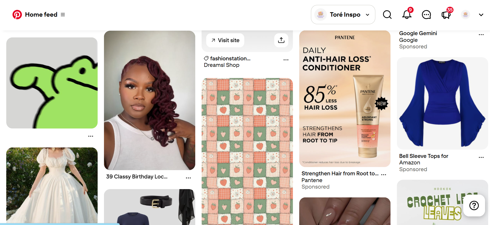
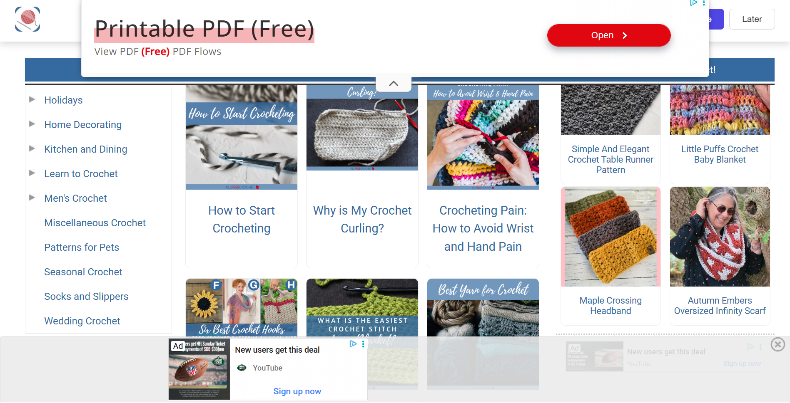
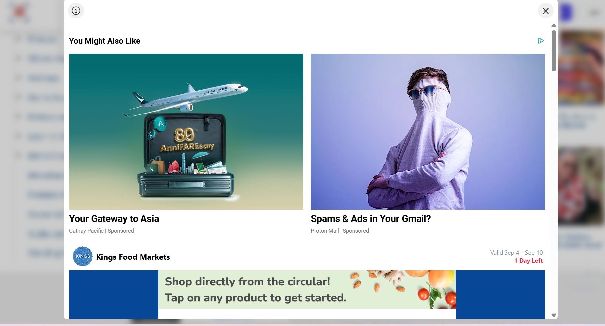

Hello my name is Nevaeh. So the best website that I love going to is Pinterest. I hope that counts but I am always so pleased to se the different ideas and inpiration I get even as soon as I open to the homepage. Yes it may be tailored to me. Yes, it may know a lot about me but It is lovely to always find what I am looking for and more.
Now the worst websites that I visit are usually blogs for recipes or crochet patterns. I find that especially on my phone, they are difficult to navigate because of the excessive amounts of ads. They slow down the browser and make it hard to find what I am looking for. Here is a perfect example of a blog that I find difficult to navigate. All Free Crochet I am sorry to say but the ads on this page froze my screen multiple times and at this point it is a pet peeve of mine.